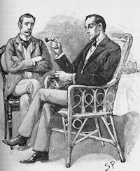

 Sir Arthur Conan Doyle’s Sherlock Holmes stories represent some of the finest detective literature ever written. In total Doyle wrote four Holmes novels and 56 short stories, a body of work enthusiasts affectionately refer to as “The Canon”. As might be expected with such a large corpus of text written over a period of forty years, there is a significant variation in quality between the Holmes stories. In general, Doyle’s earlier collections of stories (“The Adventures of Sherlock Holmes”, “The Memoirs of Sherlock Holmes”, “The Return of Sherlock Holmes”) are considered superior to his later ones (“The Casebook of Sherlock Holmes”, “His Last Bow”).
What makes a good Sherlock Holmes story? The quality of a piece of literature is difficult to measure objectively, and depends as much on personal preference as it does on writing style, plot development, characters, pacing and so on. Randall Stock’s article “Rating Sherlock Holmes” (The Baker Street Journal, December 1999, pp. 5-11) polled Sherlockian experts from around the world to come up with a comprehensive ranking of all 56 short stories.
I thought it would be interesting to explore how the quality of a story relates to statistical properties of the text itself. Does lots of dialog generally make for a good story? What about the length of the story, or the average number of words per sentence? Since the text of these works is now in the public domain (with some restrictions depending on the country you are in) it is possible to text mine the data, extract statistics from the text, and build a regression that relates them to the overall quality of the story.
For simplicity, I turned the ranking of the 56 stories into ratings on a five point scale: one star being worst, five stars being best.
| Rating | Stories |
|---|---|
| ★★★★★ | A Scandal In Bohemia, The Red-Headed League, The Adventure Of The Blue Carbuncle, The Adventure Of The Speckled Band, Silver Blaze, The Musgrave Ritual, The Final Problem, The Adventure Of The Empty House, The Adventure Of The Dancing Men, The Adventure Of The Six Napoleons, The Adventure Of The Bruce-Partington Plans |
| ★★★★ | The Man With The Twisted Lip, The Adventure Of The Copper Beeches, The Naval Treaty, The Adventure Of The Solitary Cyclist, The Adventure Of The Priory School, The Adventure Of Charles Augustus Milverton The Adventure Of The Abbey Grange, The Adventure Of The Second Stain, The Adventure Of The Devil’s Foot, His Last Bow, The Problem Of Thor Bridge |
| ★★★ | The Boscombe Valley Mystery, The Five Orange Pips, The Adventure Of The Engineer’s Thumb, The “Gloria Scott”, The Crooked Man, The Greek Interpreter, The Adventure Of The Norwood Builder, The Adventure Of Black Peter, The Adventure Of The Cardboard Box, The Adventure Of The Dying Detective, The Illustrious Client, The Adventure Of The Lion’s Mane |
| ★★ | A Case Of Identity, The Adventure Of The Noble Bachelor, The Yellow Face, The Reigate Puzzle, The Resident Patient, The Adventure Of Wisteria Lodge, The Adventure Of The Red Circle, The Disappearance Of Lady Frances Carfax, The Adventure Of The Three Garridebs, The Adventure Of The Creeping Man, The Adventure Of Shoscombe Old Place |
| ★ | The Adventure Of The Beryl Coronet, The Stock-Broker’s Clerk, The Adventure Of The Three Students, The Adventure Of The Golden Pince-Nez, The Adventure Of The Missing Three-Quarter, The Blanched Soldier, The Adventure Of The Mazarin Stone, The Adventure Of The Three Gables, The Adventure Of The Sussex Vampire, The Adventure Of The Veiled Lodger, The Adventure Of The Retired Colourman |
In this article I’ll skip over the data preparation and just cover the regression modeling and its conclusions. The file HolmesFeatures.csv contains 60 observations, one for each of the 56 short stories and one for each of the four novels. Descriptions for the columns are as follows:
The first step is to get the data into R:
# Clean up the workspace
graphics.off()
rm(list=ls())
# Read in data
f <- read.csv("HolmesFeatures.csv")
# Select only short stories (i.e. exclude novels)
d <- subset(f, collection != "novel")
# Convert rank (1=best to 56=worst) into quality (1=worst to 5=best)
d$quality <- as.numeric(cut(-d$rank, 5, labels=FALSE))Now we need to decide which variables to include in the regression. We have 12 variables that capture the statistical properties of the text and we would like to use these to predict the quality of the story on a scale of 1 to 5. However, we only have 56 observations (i.e. stories), so forcing all 12 variables into the model would almost certainly result in unreliable parameter estimates for some variables. Instead we will use cross-validation to pick the optimal number of variables that avoid overfitting our data. We use R’s stepwise variable selection to create models of increasing complexity, and then check the cross- validated mean-squared error of each of these models.
# Define formula with all eligible variables for the regression
fml.full <- formula(quality ~
avg_chars_per_word +
avg_words_per_sentence +
num_words +
pct_dialog_words_with_exclamation +
pct_words_dialog +
pct_words_holmes +
pct_words_type_name +
pct_words_type_noun +
pct_words_type_other +
pct_words_type_stopword +
pct_words_type_verb +
pct_words_watson)
# Create cross-validation folds
cv.ind <- sample(rep(1:10, length.out = nrow(d)))
# Create models of increasing complexity, compute cross-validation error
max.vars <- 0:8
mse <- rep(NA, length(max.vars))
for (i in 1:length(max.vars)) {
pred <- rep(NA, nrow(d))
for (k in 1:10) {
train <- cv.ind != k
test <- !train
m.null <- lm(quality ~ 1, d, subset = train)
m.sel <- step(m.null, fml.full, steps = max.vars[i], k = 0)
pred[test] <- predict(m.sel, d)[test]
}
mse[i] <- mean((pred - d$quality)^2)
}
# Examine error vs. number of variables in model
plot(max.vars, mse, type = "b", xlab = "Number of variables in model",
ylab = "Cross-Validation Error", xaxp = c(0, 8, 8))
points(max.vars[which.min(mse)], min(mse), pch = 16, col = "red")Great, it looks like a model with three variables gives us the best performance. Let’s refit a three-variable model on all the data and take a look at the results.
# Fit model
m.null <- lm(quality ~ 1, d)
m.sel <- step(m.null, fml.full, steps = 3, k = 0)
# Examine results
summary(m.sel)Coefficients:
Estimate Std. Error t value Pr(>|t|)
(Intercept) 1.412e-01 1.486e+00 0.095 0.924651
num_words 3.408e-04 9.359e-05 3.642 0.000625 ***
pct_words_dialog -4.873e-02 1.519e-02 -3.208 0.002287 **
avg_words_per_sentence 2.361e-01 7.776e-02 3.037 0.003733 **
Signif. codes: 0 '***' 0.001 '**' 0.01 '*' 0.05 '.' 0.1 ' ' 1OK, we have a model that suggests there are some strong relationships between the statistical properties of the text and the quality of a Sherlock Holmes story! So how do we interpret these results? The magnitude and sign of the coefficient estimates tell us the effect of each variable on the quality of the story. Here’s what we conclude:
Although this is a very simple model with only three variables it does surprisingly well at predicting the quality of a story. The table below shows the actual quality of each story (as determined by a poll of experts) versus the quality predicted by the model. In many cases the model precisely agrees with the experts (indicated by a set of green stars). Even in the cases where the model is wrong (shown in red), it is usually only off by one star.
| Story | Actual Quality | Predicted Quality |
|---|---|---|
| A Scandal In Bohemia | ★★★★★ | ★★★ |
| The Red-headed League | ★★★★★ | ★★★★ |
| A Case Of Identity | ★★ | ★★★ |
| The Boscombe Valley Mystery | ★★★ | ★★★ |
| The Five Orange Pips | ★★★ | ★★ |
| The Man With The Twisted Lip | ★★★★ | ★★★★ |
| The Adventure Of The Blue Carbuncle | ★★★★★ | ★★★ |
| The Adventure Of The Speckled Band | ★★★★★ | ★★★★ |
| The Adventure Of The Engineer’s Thumb | ★★★ | ★★★ |
| The Adventure Of The Noble Bachelor | ★★ | ★★★ |
| The Adventure Of The Beryl Coronet | ★ | ★★★ |
| The Adventure Of The Copper Beeches | ★★★★ | ★★★ |
| Silver Blaze | ★★★★★ | ★★★ |
| The Yellow Face | ★★ | ★★★ |
| The Stock-broker’s Clerk | ★ | ★★ |
| The “gloria Scott” | ★★★ | ★★★ |
| The Musgrave Ritual | ★★★★★ | ★★★ |
| The Reigate Puzzle | ★★ | ★★★ |
| The Crooked Man | ★★★ | ★★★ |
| The Resident Patient | ★★ | ★★★ |
| The Greek Interpreter | ★★★ | ★★★ |
| The Naval Treaty | ★★★★ | ★★★★ |
| The Final Problem | ★★★★★ | ★★★★ |
| The Adventure Of The Empty House | ★★★★★ | ★★★★★ |
| The Adventure Of The Norwood Builder | ★★★ | ★★★ |
| The Adventure Of The Dancing Men | ★★★★★ | ★★★★ |
| The Adventure Of The Solitary Cyclist | ★★★★ | ★★★★ |
| The Adventure Of The Priory School | ★★★★ | ★★★★ |
| The Adventure Of Black Peter | ★★★ | ★★★ |
| The Adventure Of Charles Augustus Milverton | ★★★★ | ★★★★ |
| The Adventure Of The Six Napoleons | ★★★★★ | ★★★★ |
| The Adventure Of The Three Students | ★ | ★ |
| The Adventure Of The Golden Pince-nez | ★ | ★★★ |
| The Adventure Of The Missing Three-quarter | ★ | ★★★ |
| The Adventure Of The Abbey Grange | ★★★★ | ★★★ |
| The Adventure Of The Second Stain | ★★★★ | ★★★ |
| The Adventure Of Wisteria Lodge | ★★ | ★★★★ |
| The Adventure Of The Cardboard Box | ★★★ | ★★★ |
| The Adventure Of The Red Circle | ★★ | ★★ |
| The Adventure Of The Bruce-partington Plans | ★★★★★ | ★★★ |
| The Adventure Of The Dying Detective | ★★★ | ★★ |
| The Disappearance Of Lady Frances Carfax | ★★ | ★★★ |
| The Adventure Of The Devil’s Foot | ★★★★ | ★★★★★ |
| His Last Bow | ★★★★ | ★★ |
| The Illustrious Client | ★★★ | ★★★★ |
| The Blanched Soldier | ★ | ★★ |
| The Adventure Of The Mazarin Stone | ★ | ★ |
| The Adventure Of The Three Gables | ★ | ★ |
| The Adventure Of The Sussex Vampire | ★ | ★★ |
| The Adventure Of The Three Garridebs | ★★ | ★★ |
| The Problem Of Thor Bridge | ★★★★ | ★★★ |
| The Adventure Of The Creeping Man | ★★ | ★★★ |
| The Adventure Of The Lion’s Mane | ★★★ | ★★★★ |
| The Adventure Of The Veiled Lodger | ★ | ★ |
| The Adventure Of Shoscombe Old Place | ★★ | ★★ |
| The Adventure Of The Retired Colourman | ★ | ★ |